CODING AGENTS AS PIXEL WORLD MODELS
traex/DeepSeek-V4.1-Flash · mechanics_0018
点击播放 · 原生 RGB 像素
逐轮保存的候选
回放视频、检查图与代码变化。
每份候选均可单独播放。实际图片检查记录在下方工具轨迹中。
候选 01播放与检查图
点击播放 · 原生 RGB 像素

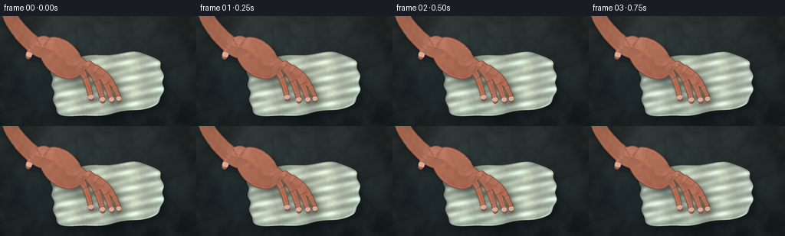
展开代码变化
--- 上一保存版本
+++ 本次保存版本
@@ -0,0 +1,555 @@
+from pathlib import Path
+import math
+
+import numpy as np
+from PIL import Image, ImageDraw, ImageFilter
+from scipy.ndimage import gaussian_filter, distance_transform_edt
+
+import artifact_io
+
+
+WIDTH = 256
+HEIGHT = 144
+FRAMES = 20
+FPS = 4.0
+SS = 4
+HW = WIDTH * SS
+HH = HEIGHT * SS
+CASE_DIR = Path(__file__).resolve().parent
+RNG = np.random.default_rng(1907)
+
+
+def smoothstep(a, b, x):
+ t = np.clip((x - a) / (b - a), 0.0, 1.0)
+ return t * t * (3.0 - 2.0 * t)
+
+
+def normalize(v):
+ return v / np.maximum(np.linalg.norm(v, axis=-1, keepdims=True), 1e-6)
+
+
+def resize_field(field, shape):
+ lo, hi = float(field.min()), float(field.max())
+ if hi - lo < 1e-6:
+ return np.zeros(shape, dtype=np.float32)
+ image = Image.fromarray(((field - lo) / (hi - lo) * 255).astype(np.uint8))
+ image = image.resize((shape[1], shape[0]), Image.Resampling.BICUBIC)
+ return np.asarray(image, dtype=np.float32) / 255.0
+
+
+def smooth_noise(shape, sigma, seed):
+ rng = np.random.default_rng(seed)
+ field = gaussian_filter(rng.normal(size=shape), sigma=sigma, mode="reflect")
+ field -= field.min()
+ return field / max(float(field.max()), 1e-6)
+
+
+def catmull_rom(points, samples_per_segment=14):
+ pts = np.asarray(points, dtype=np.float32)
+ padded = np.vstack([pts[0], pts, pts[-1]])
+ result = []
+ for index in range(1, len(padded) - 2):
+ p0, p1, p2, p3 = padded[index - 1:index + 3]
+ for t in np.linspace(0.0, 1.0, samples_per_segment, endpoint=False):
+ t2, t3 = t * t, t * t * t
+ point = 0.5 * (
+ 2.0 * p1
+ + (-p0 + p2) * t
+ + (2.0 * p0 - 5.0 * p1 + 4.0 * p2 - p3) * t2
+ + (-p0 + 3.0 * p1 - 3.0 * p2 + p3) * t3
+ )
+ result.append(point)
+ result.append(pts[-1])
+ return np.asarray(result, dtype=np.float32)
+
+
+def interpolated_widths(widths, count):
+ widths = np.asarray(widths, dtype=np.float32)
+ source = np.linspace(0.0, 1.0, len(widths))
+ target = np.linspace(0.0, 1.0, count)
+ return np.interp(target, source, widths).astype(np.float32)
+
+
+def add_tapered_stroke(draw, points, widths, value=255):
+ pts = np.asarray(points, dtype=np.float32)
+ widths = interpolated_widths(widths, len(pts))
+ for point, width in zip(pts, widths):
+ radius = width * SS * 0.5
+ x, y = point * SS
+ draw.ellipse((x - radius, y - radius, x + radius, y + radius), fill=value)
+ for index in range(len(pts) - 1):
+ width = float((widths[index] + widths[index + 1]) * 0.5 * SS)
+ draw.line(
+ tuple((pts[index] * SS).tolist()) + tuple((pts[index + 1] * SS).tolist()),
+ fill=value,
+ width=max(1, int(round(width))),
+ )
+
+
+def rotated_ellipse_points(cx, cy, rx, ry, angle, count=72):
+ t = np.linspace(0.0, 2.0 * math.pi, count, endpoint=False)
+ ca, sa = math.cos(angle), math.sin(angle)
+ x = rx * np.cos(t)
+ y = ry * np.sin(t)
+ return np.stack([cx + ca * x - sa * y, cy + sa * x + ca * y], axis=1)
+
+
+def build_background():
+ coarse = smooth_noise((HEIGHT, WIDTH), 9.0, 11)
+ medium = smooth_noise((HEIGHT, WIDTH), 3.0, 12)
+ fine = RNG.normal(0.0, 1.0, (HEIGHT, WIDTH))
+
+ coarse = resize_field(coarse, (HH, HW))
+ medium = resize_field(medium, (HH, HW))
+ fine = np.asarray(
+ Image.fromarray(((fine - fine.min()) / (np.ptp(fine) + 1e-6) * 255).astype(np.uint8))
+ .resize((HW, HH), Image.Resampling.NEAREST),
+ dtype=np.float32,
+ ) / 255.0
+
+ y = np.linspace(0.0, 1.0, HH, dtype=np.float32)[:, None]
+ x = np.linspace(0.0, 1.0, HW, dtype=np.float32)[None, :]
+ radial = np.sqrt(((x - 0.42) / 0.72) ** 2 + ((y - 0.34) / 0.78) ** 2)
+ light = np.clip(1.16 - 0.50 * radial, 0.42, 1.08)
+ stone = np.array([37.0, 48.0, 50.0], dtype=np.float32)
+ warm = np.array([8.0, 5.0, 1.0], dtype=np.float32)
+ color = stone[None, None, :] * light[..., None]
+ color += warm[None, None, :] * np.clip(1.0 - y * 1.7, 0.0, 1.0)[..., None]
+ color += (coarse[..., None] - 0.5) * np.array([18.0, 20.0, 18.0])
+ color += (medium[..., None] - 0.5) * np.array([9.0, 10.0, 9.0])
+ color += (fine[..., None] - 0.5) * 3.2
+
+ # Broad, low-contrast slate veining.
+ vein = np.exp(-((coarse - 0.53) / 0.025) ** 2) * 0.08
+ color *= 1.0 - vein[..., None]
+ return np.clip(color, 0.0, 255.0).astype(np.float32)
+
+
+BG = build_background()
+WET_NOISE = resize_field(smooth_noise((HEIGHT, WIDTH), 5.0, 31), (HH, HW))
+FOLD_NOISE = resize_field(smooth_noise((HEIGHT, WIDTH), 9.0, 32), (HH, HW))
+SKIN_NOISE = resize_field(smooth_noise((HEIGHT, WIDTH), 2.0, 41), (HH, HW))
+FIBER_NOISE = resize_field(smooth_noise((HEIGHT, WIDTH), 1.0, 42), (HH, HW))
+
+Y_GRID, X_GRID = np.mgrid[0:HH, 0:HW].astype(np.float32)
+X = X_GRID / SS
+Y = Y_GRID / SS
+
+
+def cloth_mask_and_coords(pressure):
+ cx = 139.0 + 1.2 * pressure
+ cy = 89.0 + 0.7 * pressure
+ half_w = 72.0 + 4.5 * pressure
+ half_h = 39.0 - 1.8 * pressure
+ angle = -0.105
+ ca, sa = math.cos(angle), math.sin(angle)
+ dx = X - cx
+ dy = Y - cy
+ u = (ca * dx + sa * dy) / half_w
+ v = (-sa * dx + ca * dy) / half_h
+ radius = (np.abs(u) ** 4 + np.abs(v) ** 4) ** 0.25
+ boundary = (
+ 1.0
+ + 0.026 * np.sin(8.0 * u + 2.7 * v)
+ + 0.018 * np.sin(13.0 * v - 3.5 * u)
+ + 0.018 * (FOLD_NOISE - 0.5)
+ )
+ mask = (radius < boundary).astype(np.float32)
+ return mask, u, v, radius, boundary
+
+
+def render_cloth(pressure):
+ mask, u, v, radius, boundary = cloth_mask_and_coords(pressure)
+ mask_img = Image.fromarray((mask * 255).astype(np.uint8))
+ shifted = mask_img.transform(
+ mask_img.size,
+ Image.Transform.AFFINE,
+ (1.0, 0.0, -4.0 * SS, 0.0, 1.0, -6.0 * SS),
+ resample=Image.Resampling.BILINEAR,
+ fillcolor=0,
+ )
+ broad_shadow = gaussian_filter(np.asarray(shifted, dtype=np.float32) / 255.0, 5.0 * SS)
+ color = BG * (1.0 - 0.38 * broad_shadow[..., None])
+
+ amp = 1.0 - 0.62 * pressure
+ theta = np.arctan2(v, u)
+ distance = np.sqrt((u * 1.02) ** 2 + (v * 0.91) ** 2)
+
+ fold_a = 0.63 * np.cos(2.0 * math.pi * (1.72 * u + 0.10))
+ fold_b = 0.27 * np.cos(2.0 * math.pi * (2.18 * v - 0.28 * u + 0.22))
+ fold_c = 0.17 * np.sin(2.0 * math.pi * (3.5 * v + 0.85 * u))
+ fold_d = 0.19 * (FOLD_NOISE - 0.5)
+ height = 0.72 + amp * (fold_a + fold_b + fold_c + fold_d)
+
+ # The palm makes a soft central depression while displaced cloth gathers in rings.
+ palm_u = -0.47
+ palm_v = -0.23
+ dent_dist = np.sqrt(((u - palm_u) / 0.34) ** 2 + ((v - palm_v) / 0.30) ** 2)
+ height -= (0.26 + 0.94 * pressure) * np.exp(-(dent_dist ** 1.55))
+ height += 0.38 * pressure * np.exp(-((dent_dist - 0.83) / 0.20) ** 2)
+ height += (
+ 0.18
+ * pressure
+ * np.sin(8.5 * distance - 2.2 * theta + 0.6)
+ * np.exp(-((distance - 0.45) / 0.34) ** 2)
+ )
+ height += 0.24 * np.exp(-((1.0 - radius / boundary) / 0.028) ** 2)
+
+ dhdy, dhdx = np.gradient(height)
+ nx = -dhdx * 5.2
+ ny = -dhdy * 5.2
+ nz = np.ones_like(nx)
+ normal = normalize(np.stack([nx, ny, nz], axis=-1))
+ light = np.array([-0.48, -0.70, 0.72], dtype=np.float32)
+ light /= np.linalg.norm(light)
+ diffuse = np.clip(np.sum(normal * light, axis=-1), 0.0, 1.0)
+ half_vec = light + np.array([0.0, 0.0, 1.0], dtype=np.float32)
+ half_vec /= np.linalg.norm(half_vec)
+ specular = np.clip(np.sum(normal * half_vec, axis=-1), 0.0, 1.0) ** 20
+
+ under_hand = np.exp(-(dent_dist ** 2.3))
+ wetness = np.clip(
+ 0.22
+ + 0.62 * pressure
+ + 0.24 * (WET_NOISE - 0.48)
+ + 0.22 * under_hand
+ + 0.10 * smoothstep(0.72, 1.02, radius / boundary),
+ 0.08,
+ 0.96,
+ )
+ dry = np.array([184.0, 190.0, 169.0], dtype=np.float32)
+ damp = np.array([115.0, 139.0, 132.0], dtype=np.float32)
+ soaked = np.array([67.0, 94.0, 97.0], dtype=np.float32)
+ cloth_rgb = dry[None, None, :] * (1.0 - wetness[..., None]) + damp[None, None, :] * wetness[..., None]
+ deep_wet = smoothstep(0.58, 0.98, wetness + 0.18 * under_hand)
+ cloth_rgb = cloth_rgb * (1.0 - 0.48 * deep_wet[..., None]) + soaked[None, None, :] * (0.48 * deep_wet[..., None])
+
+ thread_x = 0.5 + 0.5 * np.sin(2.0 * math.pi * (u * 52.0 + v * 1.6))
+ thread_y = 0.5 + 0.5 * np.sin(2.0 * math.pi * (v * 48.0 - u * 1.1))
+ weave = (thread_x * thread_y - 0.25) * 0.075
+ fuzz = (FIBER_NOISE - 0.5) * 0.10
+ shade = 0.56 + 0.66 * diffuse + 0.055 * height + weave + fuzz
+ cloth_rgb *= shade[..., None]
+ sheen = (0.15 + 0.85 * wetness) * specular * 0.72
+ cloth_rgb += sheen[..., None] * np.array([218.0, 238.0, 235.0])
+
+ # Fine pale fibers catch the light along the raised fold crowns.
+ crown = smoothstep(0.92, 1.35, height) * (0.35 + 0.65 * wetness)
+ cloth_rgb += crown[..., None] * np.array([16.0, 18.0, 14.0])
+
+ # A dark seam under the rolled edge gives the folded cloth thickness.
+ edge_band = smoothstep(0.955, 1.0, radius / boundary) * (1.0 - smoothstep(1.0, 1.035, radius / boundary))
+ cloth_rgb *= 1.0 - 0.22 * edge_band[..., None]
+
+ alpha = mask[..., None]
+ color = color * (1.0 - alpha) + cloth_rgb * alpha
+ return color, mask, u, v
+
+
+def hand_points(pressure):
+ palm = np.array([80.0, 55.0], dtype=np.float32)
+ shift = np.array([0.5 * pressure, 1.9 * pressure], dtype=np.float32)
+ scale = 1.0 + 0.022 * pressure
+ ca, sa = math.cos(0.010 * pressure), math.sin(0.010 * pressure)
+
+ def transform(points, tip_flex=0.0):
+ pts = np.asarray(points, dtype=np.float32).copy()
+ if tip_flex:
+ base = pts[0]
+ direction = pts[-1] - base
+ pts[-1] -= direction * tip_flex
+ pts[-1] += np.array([0.7 * pressure, 1.1 * pressure], dtype=np.float32)
+ local = pts - palm
+ local[:, 0] = ca * local[:, 0] - sa * local[:, 1]
+ local[:, 1] = sa * local[:, 0] + ca * local[:, 1]
+ return palm + local * scale + shift
+
+ wrist = transform([(8.0, -18.0), (14.0, 2.0), (29.0, 23.0), (48.0, 40.0), (64.0, 46.0)])
+ fingers = {
+ "index": transform([(93.0, 56.0), (104.0, 68.0), (112.0, 83.0), (117.0, 99.0), (119.0, 108.0)], 0.020 * pressure),
+ "middle": transform([(105.0, 59.0), (118.0, 71.0), (127.0, 87.0), (132.0, 102.0), (134.0, 111.0)], 0.024 * pressure),
+ "ring": transform([(116.0, 63.0), (130.0, 75.0), (139.0, 91.0), (144.0, 104.0), (146.0, 111.0)], 0.022 * pressure),
+ "pinky": transform([(126.0, 68.0), (140.0, 79.0), (149.0, 93.0), (154.0, 104.0), (155.0, 110.0)], 0.018 * pressure),
+ "thumb": transform([(69.0, 40.0), (59.0, 32.0), (49.0, 34.0), (41.0, 43.0), (37.0, 53.0)], 0.016 * pressure),
+ }
+ widths = {
+ "index": [10.0, 9.2, 8.4, 7.4, 6.2],
+ "middle": [10.2, 9.4, 8.7, 7.6, 6.3],
+ "ring": [9.5, 8.8, 8.0, 7.1, 5.9],
+ "pinky": [8.3, 7.8, 7.1, 6.3, 5.3],
+ "thumb": [13.0, 12.0, 10.5, 9.0, 7.2],
+ }
+ return wrist, fingers, widths, palm + shift
+
+
+def make_hand_mask(pressure):
+ image = Image.new("L", (HW, HH), 0)
+ draw = ImageDraw.Draw(image)
+ wrist, fingers, widths, palm_center = hand_points(pressure)
+
+ wrist_curve = catmull_rom(wrist, 16)
+ add_tapered_stroke(draw, wrist_curve, [17.5, 19.0, 21.5, 23.0, 24.0], 255)
+ palm_angle = math.radians(43.0)
+ palm_points = rotated_ellipse_points(
+ float(palm_center[0]), float(palm_center[1]), 33.0, 22.5, palm_angle, 90
+ )
+ draw.polygon([tuple((point * SS).tolist()) for point in palm_points], fill=255)
+
+ order = ["pinky", "ring", "middle", "index", "thumb"]
+ paths = {}
+ for name in order:
+ curve = catmull_rom(fingers[name], 16)
+ paths[name] = curve
+ adjusted = [width + 0.55 * pressure for width in widths[name]]
+ add_tapered_stroke(draw, curve, adjusted, 255)
+
+ return np.asarray(image, dtype=np.float32) / 255.0, paths, widths, palm_center
+
+
+def render_hand(pressure, paths, widths, palm_center):
+ mask, _, _, _ = make_hand_mask(pressure)
+
+ # Ground shadow shrinks as the hand settles onto the cloth.
+ offset = (6.2 - 3.2 * pressure, 8.0 - 4.3 * pressure)
+ shadow = np.asarray(
+ Image.fromarray((mask * 255).astype(np.uint8)).transform(
+ (HW, HH),
+ Image.Transform.AFFINE,
+ (1.0, 0.0, -offset[0] * SS, 0.0, 1.0, -offset[1] * SS),
+ resample=Image.Resampling.BILINEAR,
+ fillcolor=0,
+ ),
+ dtype=np.float32,
+ ) / 255.0
+ shadow = gaussian_filter(shadow, (5.0 - 2.1 * pressure) * SS)
+ contact = np.asarray(
+ Image.fromarray((mask * 255).astype(np.uint8)).transform(
+ (HW, HH),
+ Image.Transform.AFFINE,
+ (1.0, 0.0, -1.0 * SS, 0.0, 1.0, -2.0 * SS),
+ resample=Image.Resampling.BILINEAR,
+ fillcolor=0,
+ ),
+ dtype=np.float32,
+ ) / 255.0
+ contact = gaussian_filter(contact, 2.4 * SS)
+
+ dist = distance_transform_edt(mask > 0.5)
+ d_orig = dist / SS
+ gy, gx = np.gradient(dist)
+ nx = -gx / SS * 0.86
+ ny = -gy / SS * 0.86
+ nz = np.ones_like(nx) * 1.05
+ normal = normalize(np.stack([nx, ny, nz], axis=-1))
+ light = np.array([-0.45, -0.72, 0.72], dtype=np.float32)
+ light /= np.linalg.norm(light)
+ diffuse = np.clip(np.sum(normal * light, axis=-1), 0.0, 1.0)
+ half_vec = light + np.array([0.0, 0.0, 1.0], dtype=np.float32)
+ half_vec /= np.linalg.norm(half_vec)
+ specular = np.clip(np.sum(normal * half_vec, axis=-1), 0.0, 1.0) ** 22
+
+ skin_dark = np.array([137.0, 78.0, 63.0], dtype=np.float32)
+ skin_mid = np.array([191.0, 121.0, 94.0], dtype=np.float32)
+ skin_light = np.array([229.0, 166.0, 132.0], dtype=np.float32)
+ lit_mix = np.clip(0.08 + 0.95 * diffuse + 0.10 * smoothstep(0.0, 9.0, d_orig), 0.0, 1.0)
+ skin = skin_dark[None, None, :] * (1.0 - lit_mix[..., None]) + skin_mid[None, None, :] * lit_mix[..., None]
+ highlight_mix = smoothstep(0.70, 1.0, diffuse) * smoothstep(2.0, 7.0, d_orig)
+ skin = skin * (1.0 - 0.28 * highlight_mix[..., None]) + skin_light[None, None, :] * (0.28 * highlight_mix[..., None])
+
+ # Pressure blanches the knuckles and increases surface shine.
+ knuckle_masks = []
+ for name, curve in paths.items():
+ control = np.asarray(
+ [
+ curve[min(len(curve) - 1, 12)],
+ curve[min(len(curve) - 1, 30)],
+ curve[min(len(curve) - 1, 48)],
+ ],
+ dtype=np.float32,
+ )
+ for point in control:
+ radius = 5.0 if name != "thumb" else 6.0
+ k = np.exp(-(((X - point[0]) / radius) ** 2 + ((Y - point[1]) / (radius * 0.72)) ** 2))
+ knuckle_masks.append(k)
+ knuckles = np.maximum.reduce(knuckle_masks)
+ pale = np.array([239.0, 190.0, 161.0], dtype=np.float32)
+ skin = skin * (1.0 - (0.11 + 0.22 * pressure) * knuckles[..., None])
+ skin += pale[None, None, :] * ((0.11 + 0.22 * pressure) * knuckles[..., None])
+
+ skin *= 0.92 + 0.16 * (SKIN_NOISE[..., None] - 0.35)
+ skin += specular[..., None] * np.array([34.0, 26.0, 22.0]) * (0.55 + 0.35 * pressure)
+
+ # Dark silhouette edge, with a narrow rim of light inside it.
+ edge_dark = 1.0 - smoothstep(0.2, 1.7, d_orig)
+ rim_light = smoothstep(1.1, 2.1, d_orig) * (1.0 - smoothstep(2.1, 4.0, d_orig))
+ skin *= 1.0 - 0.26 * edge_dark[..., None]
+ skin += rim_light[..., None] * np.array([12.0, 8.0, 5.0])
+ skin = np.clip(skin, 0.0, 255.0)
+
+ detail = Image.new("RGBA", (HW, HH), (0, 0, 0, 0))
+ detail_draw = ImageDraw.Draw(detail)
+ for name, curve in paths.items():
+ # Joint creases are short crosswise marks at the middle phalanges.
+ for joint_index, alpha in [(12, 74), (30, 88), (48, 58)]:
+ idx = min(joint_index, len(curve) - 1)
+ idx0 = max(0, idx - 1)
+ idx1 = min(len(curve) - 1, idx + 1)
+ tangent = curve[idx1] - curve[idx0]
+ tangent /= max(float(np.linalg.norm(tangent)), 1e-5)
+ perp = np.array([-tangent[1], tangent[0]], dtype=np.float32)
+ width = (widths[name][min(len(widths[name]) - 1, joint_index // 16)] * 0.53)
+ center = curve[idx]
+ a = (center - perp * width) * SS
+ b = (center + perp * width) * SS
+ detail_draw.line((tuple(a.tolist()), tuple(b.tolist())), fill=(91, 45, 37, alpha), width=max(1, int(1.1 * SS)))
+ detail = detail.filter(ImageFilter.GaussianBlur(0.55 * SS))
+ detail_arr = np.asarray(detail, dtype=np.float32) / 255.0
+ detail_alpha = detail_arr[..., 3:4] * mask[..., None]
+ skin = skin * (1.0 - detail_alpha) + detail_arr[..., :3] * 255.0 * detail_alpha
+
+ # Fingernails reinforce the hand silhouette and catch the overhead light.
+ nail_layer = Image.new("RGBA", (HW, HH), (0, 0, 0, 0))
+ nail_draw = ImageDraw.Draw(nail_layer)
+ for name, curve in paths.items():
+ if name == "thumb":
+ center_index = len(curve) - 9
+ rx, ry = 5.0, 3.6
+ else:
+ center_index = len(curve) - 7
+ rx, ry = 4.2, 3.1
+ tip = curve[-1]
+ back = curve[max(0, center_index - 3)]
+ tangent = tip - back
+ tangent /= max(float(np.linalg.norm(tangent)), 1e-5)
+ center = tip - tangent * (2.2 if name != "thumb" else 2.8)
+ angle = math.atan2(tangent[1], tangent[0]) - math.pi / 2.0
+ points = rotated_ellipse_points(float(center[0]), float(center[1]), rx, ry, angle, 32)
+ nail_draw.polygon([tuple((point * SS).tolist()) for point in points], fill=(229, 181, 164, 225))
+ inner = rotated_ellipse_points(float(center[0] - tangent[0] * 0.8), float(center[1] - tangent[1] * 0.8), rx * 0.52, ry * 0.45, angle, 24)
+ nail_draw.polygon([tuple((point * SS).tolist()) for point in inner], fill=(249, 218, 202, 145))
+ nail_layer = nail_layer.filter(ImageFilter.GaussianBlur(0.32 * SS))
+ nail_arr = np.asarray(nail_layer, dtype=np.float32) / 255.0
+ nail_alpha = nail_arr[..., 3:4] * mask[..., None]
+ skin = skin * (1.0 - nail_alpha) + nail_arr[..., :3] * 255.0 * nail_alpha
+
+ return skin, mask, shadow, contact
+
+
+def draw_bead(color, cx, cy, radius, opacity=0.82, stretch=1.0):
+ if radius <= 0.15:
+ return color
+ local_x = (X - cx) / radius
+ local_y = (Y - cy) / (radius * stretch)
+ rr = local_x * local_x + local_y * local_y
+ mask = smoothstep(1.05, 0.80, rr)
+ if float(mask.max()) <= 0.0:
+ return color
+ z = np.sqrt(np.clip(1.0 - rr, 0.0, 1.0))
+ normal = normalize(np.stack([local_x, local_y / max(stretch, 1e-3), z + 0.12], axis=-1))
+ light = np.array([-0.52, -0.68, 0.72], dtype=np.float32)
+ light /= np.linalg.norm(light)
+ diffuse = np.clip(np.sum(normal * light, axis=-1), 0.0, 1.0)
+ spec = np.clip(np.sum(normal * light, axis=-1), 0.0, 1.0) ** 32
+ water = np.array([55.0, 84.0, 91.0], dtype=np.float32)
+ water = water * (0.64 + 0.68 * diffuse[..., None])
+ water += spec[..., None] * np.array([176.0, 209.0, 207.0])
+ alpha = mask[..., None] * opacity
+ return color * (1.0 - alpha) + np.clip(water, 0.0, 255.0) * alpha
+
+
+def add_water(color, pressure, frame_index):
+ # A glossy film and growing puddle spread from the compressed edge.
+ puddle = np.exp(
+ -(
+ ((X - (203.0 + 4.0 * pressure)) / (24.0 + 11.0 * pressure)) ** 2
+ + ((Y - 126.0) / (5.5 + 3.0 * pressure)) ** 2
+ )
+ )
+ puddle *= 0.10 + 0.18 * pressure
+ puddle_color = np.array([105.0, 136.0, 136.0], dtype=np.float32)
+ color = color * (1.0 - puddle[..., None] * 0.28) + puddle_color[None, None, :] * (puddle[..., None] * 0.28)
+
+ beads = [
+ (213.0, 121.0, 0.35 + 1.45 * pressure, 0.00),
+ (221.0, 127.0, 0.25 + 1.20 * pressure, 0.08),
+ (204.0, 130.0, 0.20 + 1.05 * pressure, 0.14),
+ (193.0, 127.0, 0.25 + 0.95 * pressure, 0.26),
+ (75.0, 127.0, 0.20 + 0.85 * pressure, 0.38),
+ (91.0, 133.0, 0.15 + 0.75 * pressure, 0.46),
+ (227.0, 119.0, 0.15 + 0.70 * pressure, 0.52),
+ (160.0, 126.0, 0.10 + 0.65 * pressure, 0.60),
+ ]
+ for x, y, radius, onset in beads:
+ visible = smoothstep(onset, min(1.0, onset + 0.18), pressure)
+ if visible > 0.0:
+ color = draw_bead(color, x, y, radius, opacity=0.55 + 0.35 * visible)
+
+ # Two detaching drops make the timelapse read immediately.
+ if frame_index >= 11:
+ fall = (frame_index - 11) / 8.0
+ y = 129.0 + 22.0 * fall * fall
+ if y < 150.0:
+ color = draw_bead(color, 217.0, y, 1.9 + 0.35 * min(fall, 1.0), opacity=0.86, stretch=1.45)
+ streak_alpha = 0.14 * (1.0 - min(fall, 1.0))
+ top = int(max(0, (y - 10.0) * SS))
+ bottom = int(min(HH, y * SS))
+ left = int((217.0 - 0.65) * SS)
+ right = int((217.0 + 0.65) * SS)
+ if bottom > top:
+ color[top:bottom, left:right] = color[top:bottom, left:right] * (1.0 - streak_alpha) + np.array(
+ [127.0, 163.0, 167.0], dtype=np.float32
+ ) * streak_alpha
+
+ if frame_index >= 15:
+ fall = (frame_index - 15) / 4.0
+ y = 132.0 + 17.0 * fall * fall
+ if y < 150.0:
+ color = draw_bead(color, 195.0, y, 1.55, opacity=0.82, stretch=1.35)
+
+ return color
+
+
+def render_frame(frame_index):
+ t = frame_index / (FRAMES - 1)
+ pressure = 0.035 + 0.965 * (t ** 1.18)
+
+ color, cloth_mask, _, _ = render_cloth(pressure)
+ hand_mask, paths, widths, palm_center = make_hand_mask(pressure)
+ hand_rgb, _, shadow, contact = render_hand(pressure, paths, widths, palm_center)
+
+ # Shadows are composited over both the table and the cloth before the hand.
+ color *= 1.0 - 0.34 * shadow[..., None]
+ color *= 1.0 - 0.21 * contact[..., None]
+
+ # Compression darkens and slightly sheens the fabric directly beneath the fingers.
+ contact_zone = gaussian_filter(hand_mask, 4.0 * SS)
+ color *= 1.0 - 0.10 * pressure * contact_zone[..., None]
+
+ color = add_water(color, pressure, frame_index)
+
+ alpha = hand_mask[..., None]
+ color = color * (1.0 - alpha) + hand_rgb * alpha
+
+ # Gentle highlight falloff keeps the eye on the cloth/hand contact.
+ y_norm = np.linspace(0.0, 1.0, HH, dtype=np.float32)[:, None]
+ x_norm = np.linspace(0.0, 1.0, HW, dtype=np.float32)[None, :]
+ vignette = 1.0 - 0.20 * np.clip(
+ np.sqrt(((x_norm - 0.52) / 0.78) ** 2 + ((y_norm - 0.56) / 0.86) ** 2) - 0.52,
+ 0.0,
+ 1.0,
+ )
+ color *= vignette[..., None]
+
+ color = np.clip(color, 0.0, 255.0)
+ image = Image.fromarray(color.astype(np.uint8)).resize((WIDTH, HEIGHT), Image.Resampling.LANCZOS)
+ return np.asarray(image, dtype=np.uint8)
+
+
+def main():
+ frames = np.stack([render_frame(index) for index in range(FRAMES)], axis=0)
+ artifact_io.save(frames, CASE_DIR)
+ print(f"generated {frames.shape} at {FPS:g} fps")
+
+
+if __name__ == "__main__":
+ main()
候选 02播放与检查图
点击播放 · 原生 RGB 像素
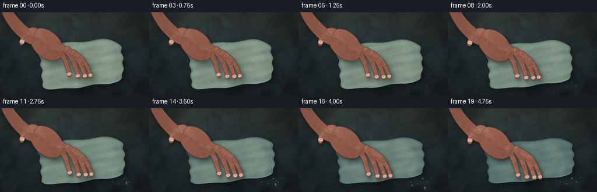
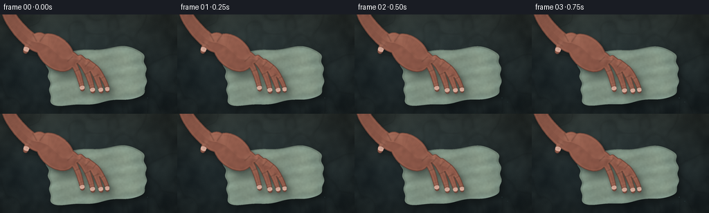
展开代码变化
--- 上一保存版本
+++ 本次保存版本
@@ -139,15 +139,15 @@
def cloth_mask_and_coords(pressure):
cx = 139.0 + 1.2 * pressure
cy = 89.0 + 0.7 * pressure
- half_w = 72.0 + 4.5 * pressure
- half_h = 39.0 - 1.8 * pressure
+ half_w = 70.0 + 4.0 * pressure
+ half_h = 39.0 - 5.0 * pressure
angle = -0.105
ca, sa = math.cos(angle), math.sin(angle)
dx = X - cx
dy = Y - cy
u = (ca * dx + sa * dy) / half_w
v = (-sa * dx + ca * dy) / half_h
- radius = (np.abs(u) ** 4 + np.abs(v) ** 4) ** 0.25
+ radius = (np.abs(u) ** 6 + np.abs(v) ** 6) ** (1.0 / 6.0)
boundary = (
1.0
+ 0.026 * np.sin(8.0 * u + 2.7 * v)
@@ -175,20 +175,20 @@
theta = np.arctan2(v, u)
distance = np.sqrt((u * 1.02) ** 2 + (v * 0.91) ** 2)
- fold_a = 0.63 * np.cos(2.0 * math.pi * (1.72 * u + 0.10))
- fold_b = 0.27 * np.cos(2.0 * math.pi * (2.18 * v - 0.28 * u + 0.22))
- fold_c = 0.17 * np.sin(2.0 * math.pi * (3.5 * v + 0.85 * u))
- fold_d = 0.19 * (FOLD_NOISE - 0.5)
+ fold_a = 0.50 * np.cos(2.0 * math.pi * (1.22 * u + 0.16))
+ fold_b = 0.22 * np.cos(2.0 * math.pi * (1.68 * v - 0.22 * u + 0.22))
+ fold_c = 0.13 * np.sin(2.0 * math.pi * (2.65 * v + 0.62 * u))
+ fold_d = 0.13 * (FOLD_NOISE - 0.5)
height = 0.72 + amp * (fold_a + fold_b + fold_c + fold_d)
# The palm makes a soft central depression while displaced cloth gathers in rings.
- palm_u = -0.47
- palm_v = -0.23
- dent_dist = np.sqrt(((u - palm_u) / 0.34) ** 2 + ((v - palm_v) / 0.30) ** 2)
- height -= (0.26 + 0.94 * pressure) * np.exp(-(dent_dist ** 1.55))
- height += 0.38 * pressure * np.exp(-((dent_dist - 0.83) / 0.20) ** 2)
+ palm_u = -0.79 + 0.07 * pressure
+ palm_v = -0.78 + 0.19 * pressure
+ dent_dist = np.sqrt(((u - palm_u) / 0.43) ** 2 + ((v - palm_v) / 0.38) ** 2)
+ height -= (0.18 + 0.88 * pressure) * np.exp(-(dent_dist ** 1.55))
+ height += 0.25 * pressure * np.exp(-((dent_dist - 0.88) / 0.24) ** 2)
height += (
- 0.18
+ 0.12
* pressure
* np.sin(8.5 * distance - 2.2 * theta + 0.6)
* np.exp(-((distance - 0.45) / 0.34) ** 2)
@@ -196,8 +196,8 @@
height += 0.24 * np.exp(-((1.0 - radius / boundary) / 0.028) ** 2)
dhdy, dhdx = np.gradient(height)
- nx = -dhdx * 5.2
- ny = -dhdy * 5.2
+ nx = -dhdx * 3.0
+ ny = -dhdy * 3.0
nz = np.ones_like(nx)
normal = normalize(np.stack([nx, ny, nz], axis=-1))
light = np.array([-0.48, -0.70, 0.72], dtype=np.float32)
@@ -209,17 +209,17 @@
under_hand = np.exp(-(dent_dist ** 2.3))
wetness = np.clip(
- 0.22
- + 0.62 * pressure
+ 0.30
+ + 0.50 * pressure
+ 0.24 * (WET_NOISE - 0.48)
+ 0.22 * under_hand
+ 0.10 * smoothstep(0.72, 1.02, radius / boundary),
0.08,
0.96,
)
- dry = np.array([184.0, 190.0, 169.0], dtype=np.float32)
- damp = np.array([115.0, 139.0, 132.0], dtype=np.float32)
- soaked = np.array([67.0, 94.0, 97.0], dtype=np.float32)
+ dry = np.array([139.0, 151.0, 132.0], dtype=np.float32)
+ damp = np.array([88.0, 113.0, 106.0], dtype=np.float32)
+ soaked = np.array([48.0, 72.0, 77.0], dtype=np.float32)
cloth_rgb = dry[None, None, :] * (1.0 - wetness[..., None]) + damp[None, None, :] * wetness[..., None]
deep_wet = smoothstep(0.58, 0.98, wetness + 0.18 * under_hand)
cloth_rgb = cloth_rgb * (1.0 - 0.48 * deep_wet[..., None]) + soaked[None, None, :] * (0.48 * deep_wet[..., None])
@@ -228,18 +228,18 @@
thread_y = 0.5 + 0.5 * np.sin(2.0 * math.pi * (v * 48.0 - u * 1.1))
weave = (thread_x * thread_y - 0.25) * 0.075
fuzz = (FIBER_NOISE - 0.5) * 0.10
- shade = 0.56 + 0.66 * diffuse + 0.055 * height + weave + fuzz
+ shade = 0.71 + 0.42 * diffuse + 0.040 * height + weave + fuzz
cloth_rgb *= shade[..., None]
- sheen = (0.15 + 0.85 * wetness) * specular * 0.72
- cloth_rgb += sheen[..., None] * np.array([218.0, 238.0, 235.0])
+ sheen = (0.10 + 0.90 * wetness) * specular * 0.48
+ cloth_rgb += sheen[..., None] * np.array([190.0, 216.0, 211.0])
# Fine pale fibers catch the light along the raised fold crowns.
crown = smoothstep(0.92, 1.35, height) * (0.35 + 0.65 * wetness)
- cloth_rgb += crown[..., None] * np.array([16.0, 18.0, 14.0])
+ cloth_rgb += crown[..., None] * np.array([9.0, 11.0, 9.0])
# A dark seam under the rolled edge gives the folded cloth thickness.
- edge_band = smoothstep(0.955, 1.0, radius / boundary) * (1.0 - smoothstep(1.0, 1.035, radius / boundary))
- cloth_rgb *= 1.0 - 0.22 * edge_band[..., None]
+ edge_band = smoothstep(0.945, 0.98, radius / boundary) * (1.0 - smoothstep(1.0, 1.035, radius / boundary))
+ cloth_rgb *= 1.0 - 0.12 * edge_band[..., None]
alpha = mask[..., None]
color = color * (1.0 - alpha) + cloth_rgb * alpha
@@ -248,9 +248,9 @@
def hand_points(pressure):
palm = np.array([80.0, 55.0], dtype=np.float32)
- shift = np.array([0.5 * pressure, 1.9 * pressure], dtype=np.float32)
- scale = 1.0 + 0.022 * pressure
- ca, sa = math.cos(0.010 * pressure), math.sin(0.010 * pressure)
+ shift = np.array([0.8 * pressure, 4.8 * pressure], dtype=np.float32)
+ scale = 1.0 + 0.048 * pressure
+ ca, sa = math.cos(0.025 * pressure), math.sin(0.025 * pressure)
def transform(points, tip_flex=0.0):
pts = np.asarray(points, dtype=np.float32).copy()
@@ -258,7 +258,7 @@
base = pts[0]
direction = pts[-1] - base
pts[-1] -= direction * tip_flex
- pts[-1] += np.array([0.7 * pressure, 1.1 * pressure], dtype=np.float32)
+ pts[-1] += np.array([1.4 * pressure, 1.4 * pressure], dtype=np.float32)
local = pts - palm
local[:, 0] = ca * local[:, 0] - sa * local[:, 1]
local[:, 1] = sa * local[:, 0] + ca * local[:, 1]
@@ -348,9 +348,9 @@
half_vec /= np.linalg.norm(half_vec)
specular = np.clip(np.sum(normal * half_vec, axis=-1), 0.0, 1.0) ** 22
- skin_dark = np.array([137.0, 78.0, 63.0], dtype=np.float32)
- skin_mid = np.array([191.0, 121.0, 94.0], dtype=np.float32)
- skin_light = np.array([229.0, 166.0, 132.0], dtype=np.float32)
+ skin_dark = np.array([111.0, 67.0, 57.0], dtype=np.float32)
+ skin_mid = np.array([158.0, 100.0, 82.0], dtype=np.float32)
+ skin_light = np.array([197.0, 140.0, 113.0], dtype=np.float32)
lit_mix = np.clip(0.08 + 0.95 * diffuse + 0.10 * smoothstep(0.0, 9.0, d_orig), 0.0, 1.0)
skin = skin_dark[None, None, :] * (1.0 - lit_mix[..., None]) + skin_mid[None, None, :] * lit_mix[..., None]
highlight_mix = smoothstep(0.70, 1.0, diffuse) * smoothstep(2.0, 7.0, d_orig)
@@ -372,7 +372,7 @@
k = np.exp(-(((X - point[0]) / radius) ** 2 + ((Y - point[1]) / (radius * 0.72)) ** 2))
knuckle_masks.append(k)
knuckles = np.maximum.reduce(knuckle_masks)
- pale = np.array([239.0, 190.0, 161.0], dtype=np.float32)
+ pale = np.array([207.0, 159.0, 133.0], dtype=np.float32)
skin = skin * (1.0 - (0.11 + 0.22 * pressure) * knuckles[..., None])
skin += pale[None, None, :] * ((0.11 + 0.22 * pressure) * knuckles[..., None])
候选 03播放与检查图
点击播放 · 原生 RGB 像素

展开代码变化
--- 上一保存版本
+++ 本次保存版本
@@ -176,9 +176,15 @@
distance = np.sqrt((u * 1.02) ** 2 + (v * 0.91) ** 2)
fold_a = 0.50 * np.cos(2.0 * math.pi * (1.22 * u + 0.16))
- fold_b = 0.22 * np.cos(2.0 * math.pi * (1.68 * v - 0.22 * u + 0.22))
- fold_c = 0.13 * np.sin(2.0 * math.pi * (2.65 * v + 0.62 * u))
- fold_d = 0.13 * (FOLD_NOISE - 0.5)
+ fold_b = 0.24 * np.cos(2.0 * math.pi * (1.68 * v - 0.22 * u + 0.22))
+ fold_c = 0.16 * np.sin(2.0 * math.pi * (2.65 * v + 0.62 * u))
+ fold_d = 0.17 * (FOLD_NOISE - 0.5)
+ crumple = 0.045 * (
+ np.sin(2.0 * math.pi * (6.3 * u + 3.4 * v + 0.35))
+ + 0.70 * np.sin(2.0 * math.pi * (-4.5 * u + 7.1 * v + 0.72))
+ )
+ crumple *= smoothstep(0.38, 0.92, radius / boundary)
+ fold_d += crumple
height = 0.72 + amp * (fold_a + fold_b + fold_c + fold_d)
# The palm makes a soft central depression while displaced cloth gathers in rings.
@@ -224,18 +230,21 @@
deep_wet = smoothstep(0.58, 0.98, wetness + 0.18 * under_hand)
cloth_rgb = cloth_rgb * (1.0 - 0.48 * deep_wet[..., None]) + soaked[None, None, :] * (0.48 * deep_wet[..., None])
- thread_x = 0.5 + 0.5 * np.sin(2.0 * math.pi * (u * 52.0 + v * 1.6))
- thread_y = 0.5 + 0.5 * np.sin(2.0 * math.pi * (v * 48.0 - u * 1.1))
- weave = (thread_x * thread_y - 0.25) * 0.075
- fuzz = (FIBER_NOISE - 0.5) * 0.10
- shade = 0.71 + 0.42 * diffuse + 0.040 * height + weave + fuzz
+ thread_x = 0.5 + 0.5 * np.sin(2.0 * math.pi * (u * 57.0 + v * 1.8))
+ thread_y = 0.5 + 0.5 * np.sin(2.0 * math.pi * (v * 53.0 - u * 1.2))
+ rib_signal = 0.62 * np.sin(2.0 * math.pi * (u * 8.8 + v * 1.1 + 0.20))
+ rib_signal += 0.38 * np.sin(2.0 * math.pi * (u * 19.5 - v * 0.7))
+ rib = np.sign(rib_signal) * np.abs(rib_signal) ** 0.55
+ weave = (thread_x * thread_y - 0.25) * 0.115 + rib * 0.027
+ fuzz = (FIBER_NOISE - 0.5) * 0.14
+ shade = 0.70 + 0.43 * diffuse + 0.040 * height + weave + fuzz
cloth_rgb *= shade[..., None]
- sheen = (0.10 + 0.90 * wetness) * specular * 0.48
+ sheen = (0.10 + 0.90 * wetness) * specular * 0.58
cloth_rgb += sheen[..., None] * np.array([190.0, 216.0, 211.0])
# Fine pale fibers catch the light along the raised fold crowns.
crown = smoothstep(0.92, 1.35, height) * (0.35 + 0.65 * wetness)
- cloth_rgb += crown[..., None] * np.array([9.0, 11.0, 9.0])
+ cloth_rgb += crown[..., None] * np.array([11.0, 13.0, 10.0])
# A dark seam under the rolled edge gives the folded cloth thickness.
edge_band = smoothstep(0.945, 0.98, radius / boundary) * (1.0 - smoothstep(1.0, 1.035, radius / boundary))
可观测工具轨迹
实际执行的命令与返回图片。
命令 1exit 0
/bin/bash -c "pwd && rg --files -g 'prompt.txt' -g 'GENERATION_RULES.md' -g 'task_spec.json' -g '"'!*.mp4'"'"
命令 2exit 0
/bin/bash -c "sed -n '1,240p' prompt.txt"
命令 3exit 0
/bin/bash -c "cat GENERATION_RULES.md && printf '\\n--- TASK SPEC ---\\n' && cat task_spec.json"
命令 4exit 0
/bin/bash -c "find . -maxdepth 2 -type f -not -path './.git/*' -printf '%p\\n' | sort | head -200"
命令 5exit 0
/bin/bash -c "sed -n '1,260p' artifact_io.py"
命令 6exit 0
/bin/bash -c "sed -n '1,260p' player_template.html"
命令 7exit 0
/bin/bash -c "python - <<'PY' import importlib.util for m in ['numpy','PIL','cv2','imageio','scipy','matplotlib']: print(m, bool(importlib.util.find_spec(m))) PY ffmpeg -version | head -1"
命令 8exit 1
/bin/bash -c 'python generate.py'
命令 9exit 0
/bin/bash -c 'python generate.py'
命令 10exit 0
/bin/bash -c 'python generate.py'
命令 11exit 0
/bin/bash -c 'mkdir -p candidates/candidate_02 && cp inspection.png transition_check.png pixels.npz index.html candidates/candidate_02/ && cp -r frames candidates/candidate_02/frames'
命令 12exit 0
/bin/bash -c 'python generate.py'
命令 13exit 0
/bin/bash -c "python - <<'PY'
from pathlib import Path
from PIL import Image
import numpy as np
p=Path('frames')
ims=[np.asarray(Image.open(p/f'{i:02d}.png'),dtype=np.float32) for i in range(20)]
d=[np.abs(ims[i]-ims[i-1]).mean() for i in range(1,20)]
print('frame diffs:', ' '.join(f'{x:.2f}' for x in d))
print('min/max mean diff:', min(d), max(d))
print('output files:')
for name in ['generate.py','pixels.npz','index.html','inspection.png','transition_check.png']:
f=Path(name); print(name, f.exists(), f.stat().st_size if f.exists() else None)
PY"命令 14exit 0
/bin/bash -c "python - <<'PY'
import numpy as np, json
from pathlib import Path
from PIL import Image
spec=json.loads(Path('task_spec.json').read_text())
z=np.load('pixels.npz')['pixels']
print('pixels',z.shape,z.dtype,'range',int(z.min()),int(z.max()))
print('frames',len(list(Path('frames').glob('*.png'))))
print('spec',spec)
# Validate first/last saved pixels against the RGB files.
packed=z.transpose(2,0,1)
for i in [0,19]:
rgb=np.stack([(packed[i]>>16)&255,(packed[i]>>8)&255,packed[i]&255],axis=-1).astype(np.uint8)
ref=np.asarray(Image.open(f'frames/{i:02d}.png'))
print('frame',i,'pixel match',np.array_equal(rgb,ref),'mean',rgb.mean(axis=(0,1)))
PY"命令 15exit 0
/bin/bash -c 'mkdir -p candidates/candidate_03 && cp inspection.png transition_check.png pixels.npz index.html candidates/candidate_03/ && cp -r frames candidates/candidate_03/frames && python -m py_compile generate.py && git status --short 2>/dev/null || true'
视觉工具实际返回图片 1
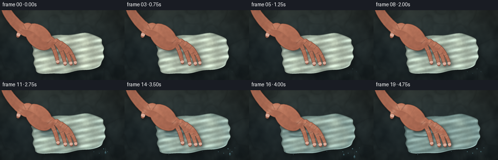
视觉工具实际返回图片 2
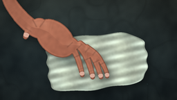
视觉工具实际返回图片 3
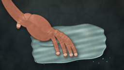
视觉工具实际返回图片 4

视觉工具实际返回图片 5
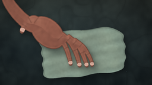
视觉工具实际返回图片 6
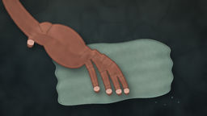
视觉工具实际返回图片 7
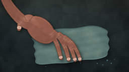
视觉工具实际返回图片 8
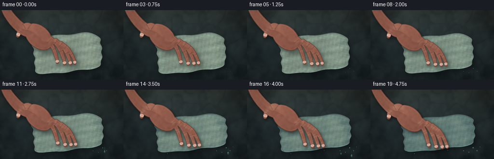
视觉工具实际返回图片 9
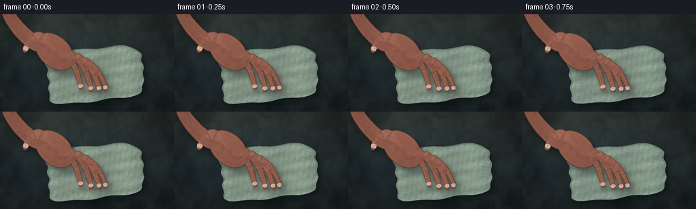
保存候选 3 份；完成命令 15 次；可验证图片返回 9 张。原始 API 响应与完整日志保留在本地。